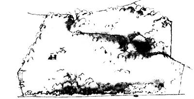
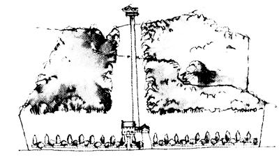
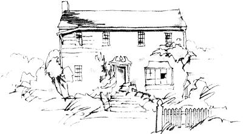
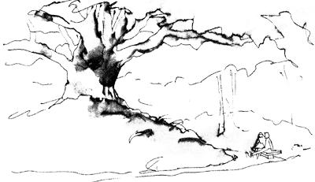
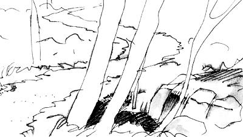
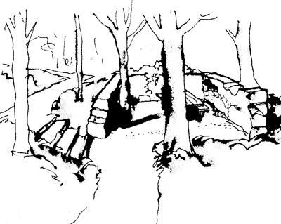
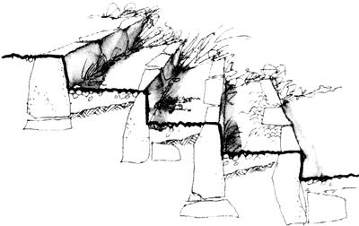
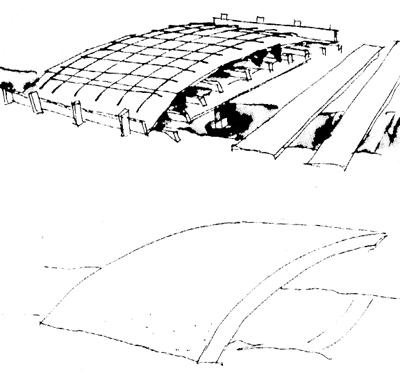
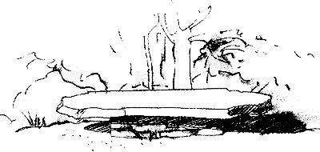
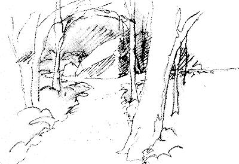

A lesson in natural design
This is the story of how Arthur and Kate Brewster turned a mess into a masterpiece.
Back in the early '70s, another couple found the property they'd dreamed about: three acres of woods on the shore a big lake in semirural Ohio. The land sloped gently to the south. A stream ran through it. There was a beautiful old stone foundation in the woods (although the couple never discovered it). And a huge oak tree with a spread of more than 90 feet capped a knoll near the little brook.
So they bought the property. Then they proceeded to destroy it.
First, they cleared away an acre of big beech and maple trees along the road. Then they threw up the most unimaginably conventional house you could ever imagine. This entire cleared area was then planted in lawn grass. A picket fence was built along the highway frontage. Italian poplars and Japanese maples alternated in a military row - dot-dot-dot - along the fence. And, as soon as they had a chance, the couple got someone to mow all the underbrush on the forest floor, taking out shrubs, vines, wildflowers and saplings.
Parklike, they called it.
Now it was time for them to turn their attention to the lake, so they summoned the bulldozers once again, clearing a 50-foot-wide swath of forest right down to the water's edge.
It not only gave them the lake view they'd dreamed about, it made way for a new walk as well: a 250-foot strip of concrete from their back patio straight down to the shore. Then they built a dock of chemically treated wood
and bought a big motorboat. Life was complete.
But a few years later the couple moved away and the house stood empty. No one, apparently, could see whatever it was that had so attracted them. Not for the price they were asking, anyway.
The house stood empty for 10 years. Weeds invaded the lawns. Trees invaded the weeds. The house began to lose its embarrassing nakedness. And down by the shore, shrubs had sprung up in a dense thicket where grass had been. The couple decided to lower the price.
It was at this point that Kate and Arthur Brewster came along. They had the ability to see potential where others saw only problems. They knew that with a bit of imagination and a lot of work they could turn that suburban fiasco back into a wooded wonderland.
They bought the house.
They knew that if they were to heal the scars left by the previous owners, they'd have to restore, replant and rebuild in such ways as not to crush the tender roots and tiny saplings that were struggling to renew the land withouthuman help.
But what about that 250-foot strip of concrete? Leave it there or rip it out? Fortunately, a friend in the excavation business told the Brewsters he needed a lot of broken slabs for a retaining wall on another job. Out went the concrete.
And that god-awful parade of exotic trees across the front of the property? The decision? Voila: instant firewood!
Arthur and Kate were of that rare breed of people who see wonders wherever they are. That's why the walks and paths they were developing held such promise. It was almost as if the land itself were telling them how to proceed.
Down came the fence. Out went the front walk. Up came the asphalt driveway. In went a surface of "porous pavers" (precast concrete blocks that allow grass to grow through). A coat of paint subdued the still-shocking pink of the house. A portion of the backyard was turned into a vegetable garden. All the rest was to be returned to the forest from which it was originally stolen.
A lucky break for the Brewsters, and for the forest, was their discovery of a native-plants nursery less than 10 miles away. Struggling for a living against the competition of nurseries and plant marts of the kind that sold the popular and brightly colored alien plants, the natural-plants people were happy to offer the Brewsters low prices, especially when the couple said they intended to use no poisons or chemical fertilizers in their reforestation project.
In just a few months, what had been a roadside horror show was fully transformed into an almost inconspicuous woodland setting. It would take generations, of course, before the new forest even began to return to some semblance of its orginal state, but the land now appeared to be back in harmony with the other area woodlands.
So now it was time for the Brewsters to enjoy their splendid fortune even more intensely by creating walkways and paths throughout the woods. They understood instinctively -and from seeing that long, horrendous strip of concrete-that the best way to get from here to there is very seldom the straight one. Walks and paths are part of the natural world; they should follow its suggestions.
One walk was to go to the lake, another to the old stone foundation and a third to the giant oak. Others would be side trails leading to hidden treasures.
After thinking about the kinds of walks they wanted, and about the problems of future maintenance,erosion, drainage, clearing and resurfacing, the Brewsters realized that no single material offered a complete answer. Lightly traveled ways could be simple dirt paths; others would have to be surfaced with pine needles or bark mulch to prevent wear. Still others, especially where many feet or garden carts would travel, needed hard surfaces, the choices being asphalt, concrete, wood, brick or flagstone. Kate and Arthur decided to use whatever proved to be least expensive, but they ruled out any heavy use of concrete.
Step number one was design. It could be done formally, using a landscape architect and a surveyor, or the Brewsters could wing it and lay it out themselves. Having lived with the land for a year, they had become even more sensitive to its needs than most experts would be. They formed a committee of two, and on their days off began walking the propertyArthur and Kate were of that rare breed of people who see wonders wherever they are. That's why the walks and paths they were developing held such promise. It was almost as if the land itself were telling them how to proceed.every inch of itArthur and Kate were of that rare breed of people who see wonders wherever they are. That's why the walks and paths they were developing held such promise. It was almost as if the land itself were telling them how to proceed.sometimes having to crawl through brush, sometimes climbing over fallen trees, in order to see just what this forest of theirs had to teach them. Their discoveries amazed them.
Great beds of velvety moss covered places where brush and tree trunks had been piled years earlier by the previous owners. With amazing luck (and the kind of openness that invites discovery they came upon a fox at the entrance to its den. A few rocks in the stream caused just enough of a barrier to create a little waterfall. And high up in the ancient oak, they could spot at least II nests.
Now, if the truth be told, not everyone would have found-or appreciated-the things the couple discovered in their woods.
Arthur and Kate were of that rare and lucky breed of people who see wonders wherever they are. That's why the walks and paths they were now developing held such promise. It was almost as if the land itself were telling them how to proceed with its design. The Brewsters knew how to listen.
It was on one of their walks that the couple discovered the old stone foundation. When they cleared away the debris they suddenly had a collection of antique bottles on their hands, and they found that the old walls were in good condition. Opening toward the south-and the lake-the three walls made an ideal shelter against cool north winds. It was designated the picnic area. For a floor within the foundation, a layer of pebbles was spread, with native mosses and vines edging the stony carpet.
Because the "old cellar hole," as they called it, was lower than the surrounding area, a set of steps was required. Finding the usual stair alternatives too hard and mechanical-looking, the Brewsters devised "planter steps" with stone risers and pebbled treads, in which they planted sedums and miniature native grasses. The banks at the sides of the steps, sloping out onto the treads as they did, made the steps appear to grow right out of the hillside, an effect that pleased everyone lucky enough to be invited on one of the preliminary tours.
"Going to have another `preliminary tour' this year, Kate?" The construction schedule became a neighborhood joke. It didn't bother the Brewsters one bit. They were in no hurry. Their greatest joy was in the work itself, which they were happy to stretch out over the rest of their lives. They couldn't imagine actually completing a project that promised to get better and better the more they worked on it. They weren't paving their land with walkways, they were enhancing it as, step-by-step, they celebrated each of its wonders.
Crossing a stream gracefully, inconspicuously and appropriately was a challenge that intrigued them for weeks. First, they laid some old planks across the little brook, just below the place where it tumbled over the rocks. They added, then removed, interesting rocks. Finally they decided to build an earth-covered bridge-to let the land cross with them to the other side.
Here, they did use concrete, first building a sturdy wooden form and laying on it a raised grid of half-inch reinforcing bars. Using cement, sand and gravel, with as little water as possible, they created a mix that was stiff enough to stay within the form's edges, a mix that would eventually produce rock-hard concrete. As soon as the 28-day damp-curing period was over, the Brewsters piled rich soil from their compost pile into their cart and moved several loads of it to the little bridge.
The bridge, of course, was not based on guesses. It was a carefully planned and engineered bit of textbook concrete work.
By the following spring it was almost impossible to tell that the hand of man-and woman-had been involved. The mosses and ground cover of the forest floor flowed right across the stream, and up to the base of the knoll crowned by the giant oak. It didn't take too long to see that any kind of footway on the ancient mound would be a sacrilege. They settled for a path around the knoll, with wide places here and there along the way from which to commune with the silent matriarch.
The walkways and paths seem so right, it's hard to believe they didn't occur naturally.
For benches, Kate and Arthur moved a few of the remaining chunks from the old concrete walk. All that remained of that arrowstraight sidewalk of yesteryear that had so blatantly divided the landscape were a few pieces five or six feet long, perfect for bench slabs. Gray and weathered now, they fit right into the forest. But how heavy they were! The Brewsters had to borrow a small trailer and manhandle the 600-pounders with bars and wedges to get them to their appointed spots. Easing them carefully onto the stone bases that awaited the slabs, Kate and Arthur were so taken by the look of the "floating" concrete that they turned to each other and said, "The dock!"
They knew that it is always wrong to clear shrubs and water plants away from the edge of a lake. Anyone, in fact, who takes the time to look and listen at the water's edge can see that wildlife abounds where the plants grow thickest. And anyone with a year of biology to his or her credit knows that the richest, and therefore most ecologically sensitive, part of a lake or pond is its shallow, sun-filled rim. With water lilies and dense growth for protection from predators, hatchlings have a chance to grow into fingerlings before venturing into deeper waters. Shorelines should be left intact.
The Brewsters decided to reach their little sailboat by leaving the water's edge virtually untouched. First, however, it had to be touched. They got a structural engineer to show them how to build a cantilevered dock-one that had no water legs at all.
The work goes on. The hillside continues to return to its original glory. In openings where trees are few, wildflowers and native shrubs grow in profusion. Where the walks and paths occur, they seem so right, so much a part of the forest fabric, it's hard to believe they didn't occur naturally.
0F COURSE, the Brewsters thought about safety in planning and building their walks. They left no overhanging limbs low enough to bump unwary heads. All the steps are of uniform rise and tread, comfortably proportioned. Low-powered, hidden-source lights mark potential hazards for the nighttime stroller. But even with these precautions taken, everything seems to fit.
It's hard to say what makes this particular network of walks and paths so nice. Anything half-hidden in the forest is bound to be appealing. But it's more than that. The Brewsters have a natural gift for design. They know about the need for focal points at the ends of the straight parts of the paths, leading the visitor deeper and deeper into the mystery.
They know about following, rather than fighting, the curving contours of the land. And their love of natural materials and muted colors seems to have been taught to them by Mother Nature herself. But that elusive extra something came from their willingness to listen, to see, and to ask themselves just what it is that this billion-year-old entity called a forest is all about.
Malcolm Wells, who wrote the birdhouse article in our last issue (Number 123), is one of America's most venerated architects and writers. A resident of Cape Cod, he is the author of An Architect's Sketchbook of Underground Buildings, available for $14.95 add 5% in MA) directly from him: 673 Satucket Rd., Brewster, MA 02631.
|
 |
 |
 |
|
 |
 |
 |
|
 |
 |
 |
|
 |
|
|